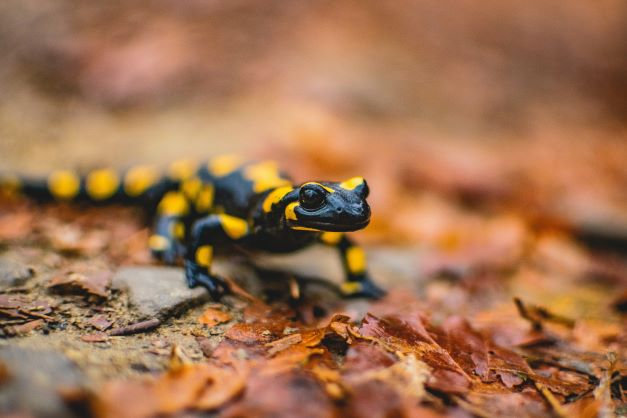

Does this salamander look wacky to you? - image by Mikołaj Kołodziejczyk
Inspirational Quote: To be weird is to be unique
Personal Background: I was born and raised in Charlotte, North Carolina. Both of my
parents are from Laos, a Southeastern Asian country that I feel little connection with,
other than somewhat understanding the Lao language when it is spoken by my parents
at home.
Professional Background: I started helping my parents with a small grocery store my
parents obtained when I was in middle school (child labor? jk) with small tasks such as
stocking shelves and running the cash register, and to this day I still help with those
sorts of tasks at a similar store in a different location owned by my parents.
Academic Background: Started preschool when I was four years old. Attended
kindergarten, elementary, middle, and high school. Went to this university during the
2021 fall semester a few months after graduating high school. I plan on graduating in
2025 during Spring.
Background in this Subject: I have taken the Intro to Comp Sci. I & II courses, and I have
designed an app before for my high school coding club. Nothing with designing websites
though :(
Primary Computer Platform: Windows 10 (tried Windows 11, it was too much for my laptop)
Courses I'm Taking & Why:
ITIS 3135 - Web-Based Application Design and Development: Recommended by my
academic advisor for the cybersecurity concentration, and I figured it would
be fun learning how to make web apps.
ITIS 3200 - Intro to Info Security & Priv: Recommended by my academic advisor for
the cybersecurity concentration, and it could also be useful since I’m currently
hoping to protect information in the future.
ITSC 3155 - Software Engineering: Recommended by my academic advisor for the
cybersecurity concentration, and the title sounded cool.
ITSC 3181 - Intro to Comp Architecture: Recommended by my academic advisor for
the cybersecurity concentration. What, were you expecting more?
MATH 1242 - Calculus II: Because apparently, Calculus I wasn’t enough mental
torture for me. And because I love repeating myself, it was recommended by my
academic advisor for the cybersecurity concentration.
Funny/Interesting Item to Remember me by: If ya couldn’t tell by my classy nickname
and my demeanor in the text above, I’m a silly one. Also, read the line below
I'd also like to Share: I like Minecraft. Was first exposed to it sometime during middle
school while watching YouTube. Was very excited when I first got Minecraft sometime
during high school. Haven’t played it as much as I used to recently but it still has a
place in my heart :D